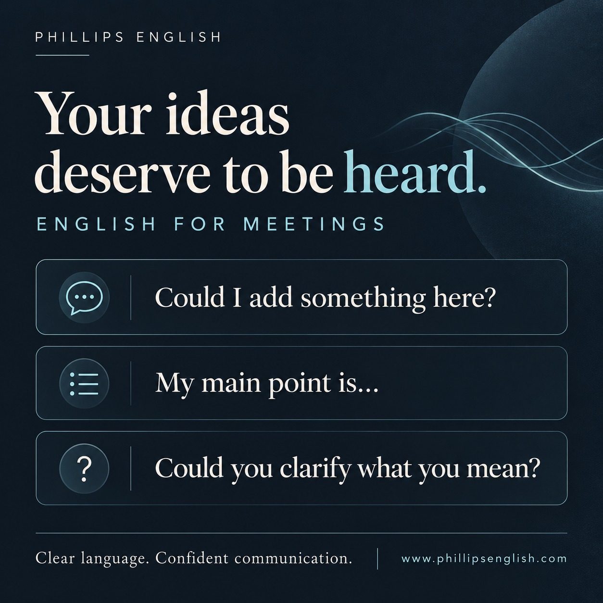

Preparing a few useful phrases can make it easier to join the discussion, organise your point and ask for clarification.
1. Join the conversation
“Could I add something here?”
Use this when you want to contribute at a suitable pause. Follow it with your idea straight away.
“Could I add something here? We might need more time to test the new system.”
2. Make your main point clear
“My main point is…”
This helps your listener identify the key message. State one point, explain your reason and give an example if it helps.
“My main point is that we need a realistic deadline. Two weeks would give us time to check the figures.”
3. Check your understanding
“Could you clarify what you mean?”
If something is unclear, ask. You can make the question more specific by identifying the part you need explained.
“Could you clarify what you mean by ‘ready’? Do you mean ready for testing or ready to launch?”
Why professional English matters
Your language choices help colleagues understand your ideas, priorities and questions. Being clear also means using an appropriate tone, listening carefully and checking that you have understood each other.
You do not need a complicated sentence for every contribution. A useful phrase, a clear point and relevant practice can give you a better starting place.
How we turn phrases into practice
In my coaching, we work with conversations and situations you actually face. We rehearse your contribution, review your wording and pronunciation, and practise again with feedback. The aim is to help you use the language when you need it.
In her review, Katrin describes using phrases from our lessons when she led a meeting in English, and feeling more relaxed and confident. Read the student reviews →
Try this before your next meeting
- Choose one point you want to contribute.
- Say it aloud using “My main point is…” and add one reason.
- Prepare one clarification question you might need.
- Practise joining the discussion with “Could I add something here?”
Record a short practice attempt. Listen for whether your main point is easy to follow, then try it again.
Want personalised help with meetings, interviews or presentations? Explore Phillips English coaching.